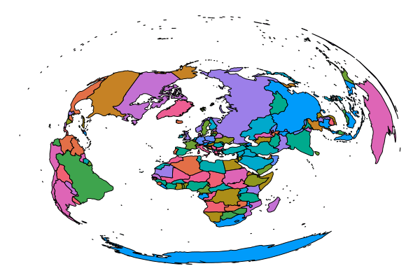
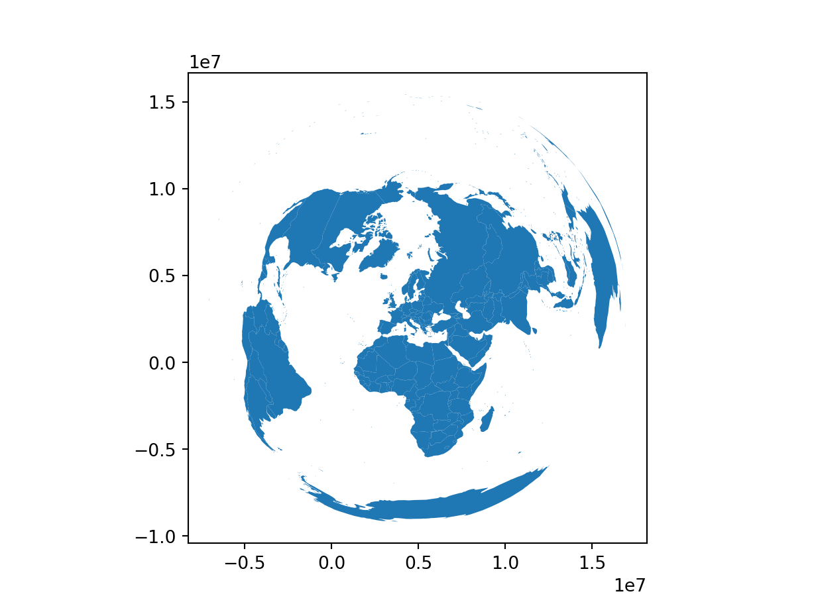

using Plots
plot(sin,
x->sin(2x),
0,
2π,
leg=false,
fill=(0,:lavender))
Quarto enables you to weave together content and executable code into a finished document. To learn more about Quarto see https://quarto.org.
using Plots
plot(sin,
x->sin(2x),
0,
2π,
leg=false,
fill=(0,:lavender))
using Plots
display(plot(sin, x -> sin(2x), 0, 2))
display(plot(x -> sin(4x), y -> sin(5y), 0, 2))

#import Pkg
#Pkg.add(["ZipFile", "Plots", "Shapefile"])
using Downloads: download
using ZipFile
using Plots
using Shapefile
# dowload the data
url = "https://gisco-services.ec.europa.eu/distribution/v2/countries/download/ref-countries-2020-60m.shp.zip""https://gisco-services.ec.europa.eu/distribution/v2/countries/download/ref-countries-2020-60m.shp.zip"zip = download(url, "./countries.zip")"./countries.zip"# unzip first archive
archive = ZipFile.Reader(zip)ZipFile.Reader for IOStream(<file ./countries.zip>) containing 19 files:
uncompressedsize method mtime name
----------------------------------------------
208665 Deflate 2022-11-30 11-57 CNTR_RG_60M_2020_3035.shp.zip
215957 Deflate 2022-11-30 11-57 CNTR_RG_60M_2020_3857.shp.zip
141221 Deflate 2022-11-30 11-57 CNTR_RG_60M_2020_4326.shp.zip
18513 Deflate 2022-11-30 11-58 CNTR_LB_2020_3035.shp.zip
18548 Deflate 2022-11-30 11-58 CNTR_LB_2020_3857.shp.zip
17666 Deflate 2022-11-30 11-58 CNTR_LB_2020_4326.shp.zip
198120 Deflate 2022-11-30 13-08 CNTR_BN_60M_2020_3035.shp.zip
150975 Deflate 2022-11-30 13-09 CNTR_BN_60M_2020_3035_COASTL.shp.zip
50011 Deflate 2022-11-30 13-09 CNTR_BN_60M_2020_3035_INLAND.shp.zip
198212 Deflate 2022-11-30 13-09 CNTR_BN_60M_2020_3857.shp.zip
151413 Deflate 2022-11-30 13-09 CNTR_BN_60M_2020_3857_COASTL.shp.zip
49743 Deflate 2022-11-30 13-10 CNTR_BN_60M_2020_3857_INLAND.shp.zip
138567 Deflate 2022-11-30 13-09 CNTR_BN_60M_2020_4326.shp.zip
105055 Deflate 2022-11-30 13-09 CNTR_BN_60M_2020_4326_COASTL.shp.zip
36842 Deflate 2022-11-30 13-09 CNTR_BN_60M_2020_4326_INLAND.shp.zip
29130 Deflate 2022-11-30 11-58 CNTR_AT_2020.csv
10625 Deflate 2020-04-06 18-33 metadata.pdf
21327 Deflate 2020-04-06 18-34 metadata.xml
689 Deflate 2022-11-30 21-07 release-notes.txtfor f in archive.files
println(f.name)
fullFilePath = joinpath("./", f.name)
if endswith(f.name,"/")
mkdir(fullFilePath)
else
out = open(fullFilePath,"w")
write(out,read(f,String))
close(out)
end
endCNTR_RG_60M_2020_3035.shp.zip
CNTR_RG_60M_2020_3857.shp.zip
CNTR_RG_60M_2020_4326.shp.zip
CNTR_LB_2020_3035.shp.zip
CNTR_LB_2020_3857.shp.zip
CNTR_LB_2020_4326.shp.zip
CNTR_BN_60M_2020_3035.shp.zip
CNTR_BN_60M_2020_3035_COASTL.shp.zip
CNTR_BN_60M_2020_3035_INLAND.shp.zip
CNTR_BN_60M_2020_3857.shp.zip
CNTR_BN_60M_2020_3857_COASTL.shp.zip
CNTR_BN_60M_2020_3857_INLAND.shp.zip
CNTR_BN_60M_2020_4326.shp.zip
CNTR_BN_60M_2020_4326_COASTL.shp.zip
CNTR_BN_60M_2020_4326_INLAND.shp.zip
CNTR_AT_2020.csv
metadata.pdf
metadata.xml
release-notes.txt# unzip second - nested - archive
zip = joinpath("./", archive.files[1].name)"./CNTR_RG_60M_2020_3035.shp.zip"archive = ZipFile.Reader(zip)ZipFile.Reader for IOStream(<file ./CNTR_RG_60M_2020_3035.shp.zip>) containing 5 files:
uncompressedsize method mtime name
----------------------------------------------
5 Deflate 2022-11-30 11-57 CNTR_RG_60M_2020_3035.cpg
94223 Deflate 2022-11-30 11-57 CNTR_RG_60M_2020_3035.dbf
380 Deflate 2022-11-30 11-57 CNTR_RG_60M_2020_3035.prj
263304 Deflate 2022-11-30 11-57 CNTR_RG_60M_2020_3035.shp
2156 Deflate 2022-11-30 11-57 CNTR_RG_60M_2020_3035.shx
for f in archive.files
println(f.name)
fullFilePath = joinpath("./", f.name)
if endswith(f.name,"/")
mkdir(fullFilePath)
else
out = open(fullFilePath,"w")
write(out,read(f,String))
close(out)
end
endCNTR_RG_60M_2020_3035.cpg
CNTR_RG_60M_2020_3035.dbf
CNTR_RG_60M_2020_3035.prj
CNTR_RG_60M_2020_3035.shp
CNTR_RG_60M_2020_3035.shxclose(archive)
# read shapefile and plot it
shape = joinpath("./", archive.files[4].name)"./CNTR_RG_60M_2020_3035.shp"countries = Shapefile.Table(shape)Shapefile.Table{Union{Missing, Shapefile.Polygon}} with 257 rows and the following 13 columns:
geometry, CNTR_ID, CNTR_NAME, NAME_ENGL, NAME_FREN, ISO3_CODE, SVRG_UN, CAPT, EU_STAT, EFTA_STAT, CC_STAT, NAME_GERM, FIDcountries |> x -> plot(x, axis = ([], false))
library(sf)Linking to GEOS 3.9.3, GDAL 3.5.2, PROJ 8.2.1; sf_use_s2() is TRUElibrary(ggplot2)
df = st_read("CNTR_RG_60M_2020_3035.shp")Reading layer `CNTR_RG_60M_2020_3035' from data source
`C:\Users\jacek\OneDrive\Documents\r-py-inkscape\tests\CNTR_RG_60M_2020_3035.shp'
using driver `ESRI Shapefile'
Simple feature collection with 257 features and 12 fields
Geometry type: MULTIPOLYGON
Dimension: XY
Bounding box: xmin: -7032129 ymin: -9159740 xmax: 16931810 ymax: 15431090
Projected CRS: ETRS89-extended / LAEA Europeggplot() +
geom_sf(data = df)
import geopandas
df = geopandas.read_file('CNTR_RG_60M_2020_3035.shp')
df.plot()